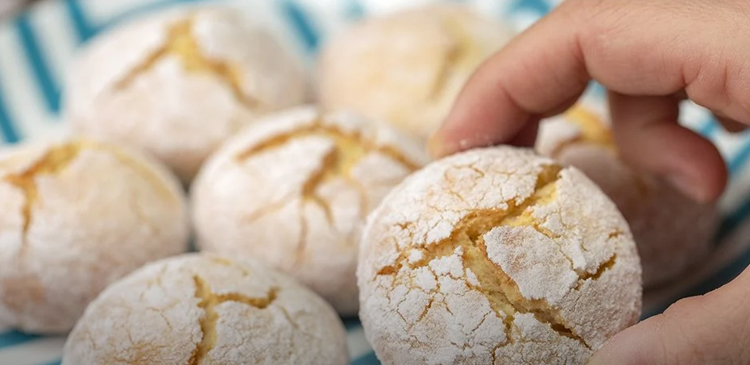

Limonlu Çatlak Kurabiye
İçinde tereyağı yok, margarin yok. Pudra şekeri var ve misler gibi kokuyor. Çayınızın yanına ağızda dağılan, nefis kıvamıyla yiyen herkesi şaşırtacak.
İşin sırrı içerisindeki tüm sıvı malzemeleri öncesinde güzelce çırpmakta saklı. Ardından bildiğiniz adımlar yapılıyor ve yumuşak bir kurabiye hamuru elde ediliyor. Hazırlanan bu kurabiye hamuruna şekil verilip önceden ısıtılmış fırına veriliyor. Pişme süresi de kısacık, aman diyelim fazla pişirip yakmayın onu.

Kaç Kişilik : 4
Hazırlama Süresi : 30 Dakika
Pişirme Süresi : 10 Dakika
Gerekli Malzemeler
- 1 Çay Bardağı Pudra Şekeri
- 2 Adet Yumurta
- 1 Adet Limonun Suyu
- 3 Su Bardağı Un
- 1 Paket Kabartma Tozu
Nasıl Yapılır ?
- Bir karıştırma kasesinde pudra şekeri, yumurta, sıvı yağ, limon suyu ve limon kabuğu rendesini güzelce karıştırın.
- Ardından unu ve kabartma tozunu da eleyerek ve azar azar ekleyerek karışıma yedirin ve ele yapışmayacak bir hamur kıvamını alana kadar yoğurun.
- Hamurdan ceviz büyüklüğünde parçalar alın ve elinizle şekil verip pudra şekerine her yerini bandırın. Pişirme kağıdı serili fırın tepsisine kurabiyeleri aralıklarla yerleştirin.
- Önceden ısıtılmış 175 derece fırında limonlu kurabiyelerinizi 20 dakika kadar pişirin. Pişmeye yakın kurabiyelerin üzeri çatlayacaktır.